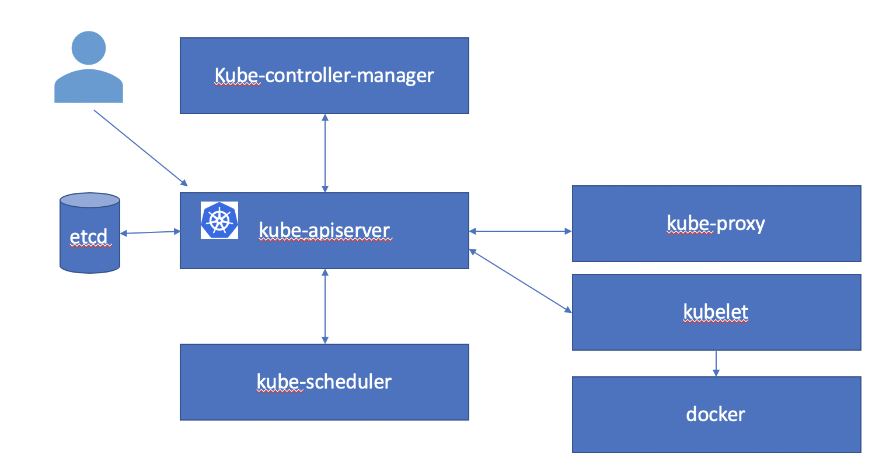

Setup Prerequisites
Kubernetes (K8s) is an open-source system for automating deployment, scaling, and management of containerized applications. For this tutorial we will setup a single node Kubernetes cluster using Vagrant and VirtualBox.
Prerequisites:
- Vagrant 2.2.5 or later
- VirtualBox 6.0.14 or later
- Laptop or server with at least 4 CPU cores and 16 Gig of RAM
Install Vagrant
Follow the instructions here to install Vagrant for your operating system.
Install Virtual Box
Follow the instructions here to install VirtualBox for your operating system.
Download Virtualbox Image
Clone the repository for this workshop.
git clone https://github.com/tfworldkatib/tutorial
cd tutorial
Start the Vagrant virtual machine that we will use
vagrant up
Sample Output
vagrant up Bringing machine 'default' up with 'virtualbox' provider... ==> default: Importing base box 'minikatib/tfworld'... ==> default: Matching MAC address for NAT networking... ==> default: Checking if box 'minikatib/tfworld' version '0.2.0' is up to date... ==> default: Setting the name of the VM: tfworld_default_1571554286050_26802 ==> default: Fixed port collision for 22 => 2222. Now on port 2200. ==> default: Clearing any previously set network interfaces... ==> default: Preparing network interfaces based on configuration... default: Adapter 1: nat ==> default: Forwarding ports... default: 31230 (guest) => 31230 (host) (adapter 1) default: 22 (guest) => 2200 (host) (adapter 1) ==> default: Running 'pre-boot' VM customizations... ==> default: Booting VM... ==> default: Waiting for machine to boot. This may take a few minutes... default: SSH address: 127.0.0.1:2200 default: SSH username: vagrant default: SSH auth method: private key ==> default: Machine booted and ready! ==> default: Checking for guest additions in VM... ==> default: Mounting shared folders... default: /vagrant => /Users/neelimam/minikatib/t3/tfworld ==> default: Running provisioner: shell... default: Running: inline script default: [init] Using Kubernetes version: v1.14.8 default: [preflight] Running pre-flight checks default: [WARNING Service-Docker]: docker service is not enabled, please run 'systemctl enable docker.service' default: [WARNING IsDockerSystemdCheck]: detected "cgroupfs" as the Docker cgroup driver. The recommended driver is "systemd". Please follow the guide at https://kubernetes.io/docs/setup/cri/ default: [preflight] Pulling images required for setting up a Kubernetes cluster default: [preflight] This might take a minute or two, depending on the speed of your internet connection default: [preflight] You can also perform this action in beforehand using 'kubeadm config images pull' default: [kubelet-start] Writing kubelet environment file with flags to file "/var/lib/kubelet/kubeadm-flags.env" default: [kubelet-start] Writing kubelet configuration to file "/var/lib/kubelet/config.yaml" default: [kubelet-start] Activating the kubelet service default: [certs] Using certificateDir folder "/etc/kubernetes/pki" default: [certs] Generating "ca" certificate and key default: [certs] Generating "apiserver" certificate and key default: [certs] apiserver serving cert is signed for DNS names [katib kubernetes kubernetes.default kubernetes.default.svc kubernetes.default.svc.cluster.local] and IPs [10.96.0.1 10.0.2.15] default: [certs] Generating "apiserver-kubelet-client" certificate and key default: [certs] Generating "front-proxy-ca" certificate and key default: [certs] Generating "front-proxy-client" certificate and key default: [certs] Generating "etcd/ca" certificate and key default: [certs] Generating "etcd/server" certificate and key default: [certs] etcd/server serving cert is signed for DNS names [katib localhost] and IPs [10.0.2.15 127.0.0.1 ::1] default: [certs] Generating "etcd/peer" certificate and key default: [certs] etcd/peer serving cert is signed for DNS names [katib localhost] and IPs [10.0.2.15 127.0.0.1 ::1] default: [certs] Generating "etcd/healthcheck-client" certificate and key default: [certs] Generating "apiserver-etcd-client" certificate and key default: [certs] Generating "sa" key and public key default: [kubeconfig] Using kubeconfig folder "/etc/kubernetes" default: [kubeconfig] Writing "admin.conf" kubeconfig file default: [kubeconfig] Writing "kubelet.conf" kubeconfig file default: [kubeconfig] Writing "controller-manager.conf" kubeconfig file default: [kubeconfig] Writing "scheduler.conf" kubeconfig file default: [control-plane] Using manifest folder "/etc/kubernetes/manifests" default: [control-plane] Creating static Pod manifest for "kube-apiserver" default: [control-plane] Creating static Pod manifest for "kube-controller-manager" default: [control-plane] Creating static Pod manifest for "kube-scheduler" default: [etcd] Creating static Pod manifest for local etcd in "/etc/kubernetes/manifests" default: [wait-control-plane] Waiting for the kubelet to boot up the control plane as static Pods from directory "/etc/kubernetes/manifests". This can take up to 4m0s default: [apiclient] All control plane components are healthy after 36.003972 seconds default: [upload-config] storing the configuration used in ConfigMap "kubeadm-config" in the "kube-system" Namespace default: [kubelet] Creating a ConfigMap "kubelet-config-1.14" in namespace kube-system with the configuration for the kubelets in the cluster default: [upload-certs] Skipping phase. Please see --experimental-upload-certs default: [mark-control-plane] Marking the node katib as control-plane by adding the label "node-role.kubernetes.io/master=''" default: [mark-control-plane] Marking the node katib as control-plane by adding the taints [node-role.kubernetes.io/master:NoSchedule] default: [bootstrap-token] Using token: 6cvjk2.7kwbwb0oedxmmxnf default: [bootstrap-token] Configuring bootstrap tokens, cluster-info ConfigMap, RBAC Roles default: [bootstrap-token] configured RBAC rules to allow Node Bootstrap tokens to post CSRs in order for nodes to get long term certificate credentials default: [bootstrap-token] configured RBAC rules to allow the csrapprover controller automatically approve CSRs from a Node Bootstrap Token default: [bootstrap-token] configured RBAC rules to allow certificate rotation for all node client certificates in the cluster default: [bootstrap-token] creating the "cluster-info" ConfigMap in the "kube-public" namespace default: [addons] Applied essential addon: CoreDNS default: [addons] Applied essential addon: kube-proxy default: default: Your Kubernetes control-plane has initialized successfully! default: default: To start using your cluster, you need to run the following as a regular user: default: default: mkdir -p $HOME/.kube default: sudo cp -i /etc/kubernetes/admin.conf $HOME/.kube/config default: sudo chown $(id -u):$(id -g) $HOME/.kube/config default: default: You should now deploy a pod network to the cluster. default: Run "kubectl apply -f [podnetwork].yaml" with one of the options listed at: default: https://kubernetes.io/docs/concepts/cluster-administration/addons/ default: default: Then you can join any number of worker nodes by running the following on each as root: default: default: kubeadm join 10.0.2.15:6443 --token 6cvjk2.7kwbwb0oedxmmxnf \ default: --discovery-token-ca-cert-hash sha256:081c1fe5d9e42a8d2c85ffc7465a3b606d8ae90e7511861cb7eeba3397a7e3f5 default: node/katib untainted default: configmap/kube-router-cfg created default: daemonset.apps/kube-router created default: serviceaccount/kube-router created default: clusterrole.rbac.authorization.k8s.io/kube-router created default: clusterrolebinding.rbac.authorization.k8s.io/kube-router created default: persistentvolume/data-kf-nfs-server-provisioner-0 createdSetup Kubernetes
You can skip this section if you have an existing Kubernetes cluster with a dynamic volume provisioner.
Install Kubernetes
Login to the VM
vagrant ssh
Sample Output
Welcome to Ubuntu 18.04.2 LTS (GNU/Linux 4.15.0-51-generic x86_64)- Documentation: https://help.ubuntu.com
- Management: https://landscape.canonical.com
- Support: https://ubuntu.com/advantage
System information as of Sun Oct 20 06:53:33 UTC 2019
System load: 0.87 Users logged in: 0 Usage of /: 18.6% of 61.80GB IP address for eth0: 10.0.2.15 Memory usage: 14% IP address for docker0: 172.17.0.1 Swap usage: 0% IP address for kube-bridge: 192.168.0.1 Processes: 160
-
Kata Containers are now fully integrated in Charmed Kubernetes 1.16! Yes, charms take the Krazy out of K8s Kata Kluster Konstruction.
https://ubuntu.com/kubernetes/docs/release-notes
111 packages can be updated. 60 updates are security updates.
Last login: Sun Oct 20 03:54:17 2019 from 10.0.2.2
Kubernetes has been started during VM provisioning. You can confirm this as follows.
kubectl get nodes
Sample Output
NAME STATUS ROLES AGE VERSION katib Ready master 2m15s v1.14.8Start helm and install NFS helm chart. This provides dynamic provisioning for Kubernetes workloads.
cd $HOME/tfworld/setup/k8s-config/
./start-helm.sh
This will take a couple of minutes.
Sample Output
serviceaccount/tiller created clusterrolebinding.rbac.authorization.k8s.io/tiller created Creating /home/vagrant/.helm Creating /home/vagrant/.helm/repository Creating /home/vagrant/.helm/repository/cache Creating /home/vagrant/.helm/repository/local Creating /home/vagrant/.helm/plugins Creating /home/vagrant/.helm/starters Creating /home/vagrant/.helm/cache/archive Creating /home/vagrant/.helm/repository/repositories.yaml Adding stable repo with URL: https://kubernetes-charts.storage.googleapis.com Adding local repo with URL: http://127.0.0.1:8879/charts $HELM_HOME has been configured at /home/vagrant/.helm.Tiller (the Helm server-side component) has been installed into your Kubernetes Cluster.
Please note: by default, Tiller is deployed with an insecure 'allow unauthenticated users' policy.
To prevent this, run helm init with the --tiller-tls-verify flag.
For more information on securing your installation see: https://docs.helm.sh/using_helm/#securing-your-helm-installation
Hang tight while we grab the latest from your chart repositories...
...Skip local chart repository
...Successfully got an update from the "stable" chart repository
Update Complete.
NAME: kf
LAST DEPLOYED: Sun Oct 20 06:56:39 2019
NAMESPACE: kube-system
STATUS: DEPLOYED
RESOURCES: ==> v1/ClusterRole NAME AGE kf-nfs-server-provisioner 1s
==> v1/ClusterRoleBinding NAME AGE kf-nfs-server-provisioner 1s
==> v1/Pod(related) NAME READY STATUS RESTARTS AGE kf-nfs-server-provisioner-0 0/1 Pending 0 1s
==> v1/Service
NAME TYPE CLUSTER-IP EXTERNAL-IP PORT(S) AGE
kf-nfs-server-provisioner ClusterIP 10.100.45.158
==> v1/ServiceAccount NAME SECRETS AGE kf-nfs-server-provisioner 1 1s
==> v1/StorageClass NAME PROVISIONER AGE nfs cluster.local/kf-nfs-server-provisioner 1s
==> v1beta2/StatefulSet NAME READY AGE kf-nfs-server-provisioner 0/1 1s
NOTES: The NFS Provisioner service has now been installed.
A storage class named 'nfs' has now been created and is available to provision dynamic volumes.
You can use this storageclass by creating a PersistentVolumeClaim with the
correct storageClassName attribute. For example:
---
kind: PersistentVolumeClaim
apiVersion: v1
metadata:
name: test-dynamic-volume-claim
spec:
storageClassName: "nfs"
accessModes:
- ReadWriteOnce
resources:
requests:
storage: 100Mi
Congratulations! Now you have a single node Kubernetes cluster on your laptop. The magic of Kubernetes allows you to run your workloads on this tiny Kubernetes cluster identical to how you would on your production cluster in your datacenter or in a cloud.
Kubernetes Architecture
A Kubernetes cluster consists of some master components and some worker components. In the single node Kubernetes cluster the master and worker components may run on the same node. In a production Kubernetes cluster you typically have one or more master nodes and many worker nodes.

Add GVK
Kubernetes API server has been designed to be extensible. There are three primary mechanisms to extend Kubernetes -
- Plugins
- API Aggregators
- Custom Resources

Kubeflow
Architecture
Jupyter Notebook
Katib
Katib stands for secretary in Arabic. As Vizier stands for a high official or a prime minister in Arabic, this project Katib is named in the honor of Vizier.
Katib is a scalable and extensible Automatic Machine Learning(AutoML) framework on Kubernetes. It supports Hyperparameter tuning and neural architecture search. It enables users to discover models that are as good as hand-crafted models, without having to go through the laborious process of manual configuration and iteration.
Katib organizes an optimization or neural architecture search as an Experiment.
AutoML algorithms run in an interative manner. An Experiment defines the search space, metrics target and maximum number of iterations. Katib searches iteratively in the search space to meet the metrics target or for the maximum number of iterations.
Katib supports two different mechanisms for AutoML - Hyperparameter Tuning and Neural Architecture Search.
Hyperparameter Tuning
Hyperparameter tuning finds the optimal hyperparameter vector for a given model architecture. In each iteration Katib uses a Suggestion algorithm to generate a candidate hyperparameter vector. The candidate hyperparameters are given to a Trial that provides training and validation services. The metrics collected from that trial are fed into the Suggestion algorithm to generate the candidate vector for the next iteration. This process continues till we reach the desired metric goal or the maximum number of iterations if complete.

In this tutorial we will focus on Hyperparameter tuning.
Neural Architecture Search

Installation
Let us start with the install of Katib.
cd $HOME
git clone https://github.com/tfworldkatib/tutorial.git
cd $HOME/tutorial/setup/katib-install
./deploy.sh
Sample Output
+ kubectl apply -f v1alpha3 namespace/kubeflow created + kubectl apply -f v1alpha3/katib-controller customresourcedefinition.apiextensions.k8s.io/experiments.kubeflow.org created customresourcedefinition.apiextensions.k8s.io/suggestions.kubeflow.org created customresourcedefinition.apiextensions.k8s.io/trials.kubeflow.org created configmap/katib-config created deployment.apps/katib-controller created clusterrole.rbac.authorization.k8s.io/katib-controller created serviceaccount/katib-controller created clusterrolebinding.rbac.authorization.k8s.io/katib-controller created secret/katib-controller created service/katib-controller created configmap/trial-template created + kubectl apply -f v1alpha3/manager deployment.extensions/katib-manager created service/katib-manager created + kubectl apply -f v1alpha3/pv persistentvolume/katib-mysql created persistentvolumeclaim/katib-mysql created + kubectl apply -f v1alpha3/db deployment.extensions/katib-db created secret/katib-db-secrets created service/katib-db created + kubectl apply -f v1alpha3/ui deployment.extensions/katib-ui created clusterrole.rbac.authorization.k8s.io/katib-ui created serviceaccount/katib-ui created clusterrolebinding.rbac.authorization.k8s.io/katib-ui created service/katib-ui created + kubectl apply -f tf-job customresourcedefinition.apiextensions.k8s.io/tfjobs.kubeflow.org created serviceaccount/tf-job-dashboard created serviceaccount/tf-job-operator created clusterrole.rbac.authorization.k8s.io/kubeflow-tfjobs-admin created clusterrole.rbac.authorization.k8s.io/kubeflow-tfjobs-edit created clusterrole.rbac.authorization.k8s.io/kubeflow-tfjobs-view created clusterrole.rbac.authorization.k8s.io/tf-job-operator created clusterrolebinding.rbac.authorization.k8s.io/tf-job-operator created service/tf-job-operator created deployment.apps/tf-job-operator created + kubectl apply -f pytorch customresourcedefinition.apiextensions.k8s.io/pytorchjobs.kubeflow.org created serviceaccount/pytorch-operator created clusterrole.rbac.authorization.k8s.io/kubeflow-pytorchjobs-admin created clusterrole.rbac.authorization.k8s.io/kubeflow-pytorchjobs-edit created clusterrole.rbac.authorization.k8s.io/kubeflow-pytorchjobs-view created clusterrole.rbac.authorization.k8s.io/pytorch-operator created clusterrolebinding.rbac.authorization.k8s.io/pytorch-operator created service/pytorch-operator created deployment.apps/pytorch-operator createdCheck that the Katib core components are installed and ready.
kubectl -n kubeflow get pods
Sample Output
NAME READY STATUS RESTARTS AGE katib-controller-7665868558-nfghw 1/1 Running 1 80s katib-db-594756f779-dxttq 1/1 Running 0 81s katib-manager-769b7bcbfb-7vvgx 1/1 Running 0 81s katib-ui-854969c97-tl4wg 1/1 Running 0 79s pytorch-operator-794899d49b-ww59g 1/1 Running 0 79s tf-job-operator-7b589f5f5f-fpr2p 1/1 Running 0 80s
katib-controller, katib-manager, katib-db and katib-ui are the core components of Katib. We have also installed a tf-job-operator and pytorch-operator to be able to run TensorFlow Jobs and PyTorch Jobs.
TODO: Add Katib diagram here.
Hyperparameter Tuning
Katib has an extensible architecture for Suggestion algorithms. Today we will look at four of the in-built models.
Let us start with the random algorithm using a TensorFlow Job example.
cd $HOME/tutorial/setup/katib/examples/v1alpha3
kubectl apply -f tfjob-example.yaml
Sample Output
experiment.kubeflow.org/tfjob-example createdCheck that the Experiment tfjob-example has started.
kubectl -n kubeflow get experiment
Sample Output
NAME STATUS AGE tfjob-example Running 98sCheck the details of the Experiment tfjob-example
kubectl -n kubeflow get experiment tfjob-example -o json
Sample Output
{ "apiVersion": "kubeflow.org/v1alpha3", "kind": "Experiment", "metadata": { "annotations": { "kubectl.kubernetes.io/last-applied-configuration": "{\"apiVersion\":\"kubeflow.org/v1alpha3\",\"kind\":\"Experiment\",\"metadata\":{\"annotations\":{},\"name\":\"tfjob-example\",\"namespace\":\"kubeflow\"},\"spec\":{\"algorithm\":{\"algorithmName\":\"random\"},\"maxFailedTrialCount\":3,\"maxTrialCount\":12,\"metricsCollectorSpec\":{\"collector\":{\"kind\":\"TensorFlowEvent\"},\"source\":{\"fileSystemPath\":{\"kind\":\"Directory\",\"path\":\"/train\"}}},\"objective\":{\"goal\":0.99,\"objectiveMetricName\":\"accuracy_1\",\"type\":\"maximize\"},\"parallelTrialCount\":3,\"parameters\":[{\"feasibleSpace\":{\"max\":\"0.05\",\"min\":\"0.01\"},\"name\":\"--learning_rate\",\"parameterType\":\"double\"},{\"feasibleSpace\":{\"max\":\"200\",\"min\":\"100\"},\"name\":\"--batch_size\",\"parameterType\":\"int\"}],\"trialTemplate\":{\"goTemplate\":{\"rawTemplate\":\"apiVersion: \\\"kubeflow.org/v1\\\"\\nkind: TFJob\\nmetadata:\\n name: {{.Trial}}\\n namespace: {{.NameSpace}}\\nspec:\\n tfReplicaSpecs:\\n Worker:\\n replicas: 1 \\n restartPolicy: OnFailure\\n template:\\n spec:\\n containers:\\n - name: tensorflow \\n image: gcr.io/kubeflow-ci/tf-mnist-with-summaries:1.0\\n imagePullPolicy: IfNotPresent\\n command:\\n - \\\"python\\\"\\n - \\\"/var/tf_mnist/mnist_with_summaries.py\\\"\\n - \\\"--log_dir=/train/metrics\\\"\\n {{- with .HyperParameters}}\\n {{- range .}}\\n - \\\"{{.Name}}={{.Value}}\\\"\\n {{- end}}\\n {{- end}}\"}}}}\n" }, "creationTimestamp": "2019-10-20T07:03:52Z", "finalizers": [ "update-prometheus-metrics" ], "generation": 2, "name": "tfjob-example", "namespace": "kubeflow", "resourceVersion": "2219", "selfLink": "/apis/kubeflow.org/v1alpha3/namespaces/kubeflow/experiments/tfjob-example", "uid": "c5e3cdb3-f307-11e9-b489-080027c5bc64" }, "spec": { "algorithm": { "algorithmName": "random", "algorithmSettings": null }, "maxFailedTrialCount": 3, "maxTrialCount": 12, "metricsCollectorSpec": { "collector": { "kind": "TensorFlowEvent" }, "source": { "fileSystemPath": { "kind": "Directory", "path": "/train" } } }, "objective": { "goal": 0.99, "objectiveMetricName": "accuracy_1", "type": "maximize" }, "parallelTrialCount": 3, "parameters": [ { "feasibleSpace": { "max": "0.05", "min": "0.01" }, "name": "--learning_rate", "parameterType": "double" }, { "feasibleSpace": { "max": "200", "min": "100" }, "name": "--batch_size", "parameterType": "int" } ], "trialTemplate": { "goTemplate": { "rawTemplate": "apiVersion: \"kubeflow.org/v1\"\nkind: TFJob\nmetadata:\n name: {{.Trial}}\n namespace: {{.NameSpace}}\nspec:\n tfReplicaSpecs:\n Worker:\n replicas: 1 \n restartPolicy: OnFailure\n template:\n spec:\n containers:\n - name: tensorflow \n image: gcr.io/kubeflow-ci/tf-mnist-with-summaries:1.0\n imagePullPolicy: IfNotPresent\n command:\n - \"python\"\n - \"/var/tf_mnist/mnist_with_summaries.py\"\n - \"--log_dir=/train/metrics\"\n {{- with .HyperParameters}}\n {{- range .}}\n - \"{{.Name}}={{.Value}}\"\n {{- end}}\n {{- end}}" } } }, "status": { "conditions": [ { "lastTransitionTime": "2019-10-20T07:03:52Z", "lastUpdateTime": "2019-10-20T07:03:52Z", "message": "Experiment is created", "reason": "ExperimentCreated", "status": "True", "type": "Created" }, { "lastTransitionTime": "2019-10-20T07:05:06Z", "lastUpdateTime": "2019-10-20T07:05:06Z", "message": "Experiment is running", "reason": "ExperimentRunning", "status": "True", "type": "Running" } ], "currentOptimalTrial": { "observation": { "metrics": null }, "parameterAssignments": null }, "startTime": "2019-10-20T07:03:52Z", "trials": 3, "trialsPending": 3 } }You can see Katib creating multiple Trial worker pods.
kubectl -n kubeflow get pods
Sample Output
NAME READY STATUS RESTARTS AGE katib-controller-7665868558-nfghw 1/1 Running 1 6m6s katib-db-594756f779-dxttq 1/1 Running 0 6m7s katib-manager-769b7bcbfb-7vvgx 1/1 Running 0 6m7s katib-ui-854969c97-tl4wg 1/1 Running 0 6m5s pytorch-operator-794899d49b-ww59g 1/1 Running 0 6m5s tf-job-operator-7b589f5f5f-fpr2p 1/1 Running 0 6m6s tfjob-example-random-6d68b59ccd-fcn8f 0/1 Running 0 11s tfjob-example-random-6d68b59ccd-fcn8f 1/1 Running 0 13s tfjob-example-gr6st2jc-worker-0 0/2 Pending 0 0s tfjob-example-gr6st2jc-worker-0 0/2 Pending 0 0s tfjob-example-gr6st2jc-worker-0 0/2 ContainerCreating 0 1s tfjob-example-8n8xn9kx-worker-0 0/2 Pending 0 0s tfjob-example-8n8xn9kx-worker-0 0/2 Pending 0 0s tfjob-example-8n8xn9kx-worker-0 0/2 ContainerCreating 0 1s tfjob-example-snjtzpc9-worker-0 0/2 Pending 0 0s tfjob-example-snjtzpc9-worker-0 0/2 Pending 0 1s tfjob-example-snjtzpc9-worker-0 0/2 ContainerCreating 0 1s tfjob-example-gr6st2jc-worker-0 2/2 Running 0 4s tfjob-example-8n8xn9kx-worker-0 2/2 Running 0 6s tfjob-example-snjtzpc9-worker-0 2/2 Running 0 5sThis step takes about 10-15 mins to complete. Your Vagrant VM will likely be very busy at this time. Please do not try to run multiple experiments on this simultaneously.
Check the completion status of the Experiment tfjob-example
kubectl -n kubeflow get experiment tfjob-example -o json
Sample Output
{ "apiVersion": "kubeflow.org/v1alpha3", "kind": "Experiment", "metadata": { "annotations": { "kubectl.kubernetes.io/last-applied-configuration": "{\"apiVersion\":\"kubeflow.org/v1alpha3\",\"kind\":\"Experiment\",\"metadata\":{\"annotations\":{},\"name\":\"tfjob-example\",\"namespace\":\"kubeflow\"},\"spec\":{\"algorithm\":{\"algorithmName\":\"random\"},\"maxFailedTrialCount\":3,\"maxTrialCount\":12,\"metricsCollectorSpec\":{\"collector\":{\"kind\":\"TensorFlowEvent\"},\"source\":{\"fileSystemPath\":{\"kind\":\"Directory\",\"path\":\"/train\"}}},\"objective\":{\"goal\":0.99,\"objectiveMetricName\":\"accuracy_1\",\"type\":\"maximize\"},\"parallelTrialCount\":3,\"parameters\":[{\"feasibleSpace\":{\"max\":\"0.05\",\"min\":\"0.01\"},\"name\":\"--learning_rate\",\"parameterType\":\"double\"},{\"feasibleSpace\":{\"max\":\"200\",\"min\":\"100\"},\"name\":\"--batch_size\",\"parameterType\":\"int\"}],\"trialTemplate\":{\"goTemplate\":{\"rawTemplate\":\"apiVersion: \\\"kubeflow.org/v1\\\"\\nkind: TFJob\\nmetadata:\\n name: {{.Trial}}\\n namespace: {{.NameSpace}}\\nspec:\\n tfReplicaSpecs:\\n Worker:\\n replicas: 1 \\n restartPolicy: OnFailure\\n template:\\n spec:\\n containers:\\n - name: tensorflow \\n image: gcr.io/kubeflow-ci/tf-mnist-with-summaries:1.0\\n imagePullPolicy: IfNotPresent\\n command:\\n - \\\"python\\\"\\n - \\\"/var/tf_mnist/mnist_with_summaries.py\\\"\\n - \\\"--log_dir=/train/metrics\\\"\\n {{- with .HyperParameters}}\\n {{- range .}}\\n - \\\"{{.Name}}={{.Value}}\\\"\\n {{- end}}\\n {{- end}}\"}}}}\n" }, "creationTimestamp": "2019-10-20T07:03:52Z", "finalizers": [ "update-prometheus-metrics" ], "generation": 2, "name": "tfjob-example", "namespace": "kubeflow", "resourceVersion": "3763", "selfLink": "/apis/kubeflow.org/v1alpha3/namespaces/kubeflow/experiments/tfjob-example", "uid": "c5e3cdb3-f307-11e9-b489-080027c5bc64" }, "spec": { "algorithm": { "algorithmName": "random", "algorithmSettings": null }, "maxFailedTrialCount": 3, "maxTrialCount": 12, "metricsCollectorSpec": { "collector": { "kind": "TensorFlowEvent" }, "source": { "fileSystemPath": { "kind": "Directory", "path": "/train" } } }, "objective": { "goal": 0.99, "objectiveMetricName": "accuracy_1", "type": "maximize" }, "parallelTrialCount": 3, "parameters": [ { "feasibleSpace": { "max": "0.05", "min": "0.01" }, "name": "--learning_rate", "parameterType": "double" }, { "feasibleSpace": { "max": "200", "min": "100" }, "name": "--batch_size", "parameterType": "int" } ], "trialTemplate": { "goTemplate": { "rawTemplate": "apiVersion: \"kubeflow.org/v1\"\nkind: TFJob\nmetadata:\n name: {{.Trial}}\n namespace: {{.NameSpace}}\nspec:\n tfReplicaSpecs:\n Worker:\n replicas: 1 \n restartPolicy: OnFailure\n template:\n spec:\n containers:\n - name: tensorflow \n image: gcr.io/kubeflow-ci/tf-mnist-with-summaries:1.0\n imagePullPolicy: IfNotPresent\n command:\n - \"python\"\n - \"/var/tf_mnist/mnist_with_summaries.py\"\n - \"--log_dir=/train/metrics\"\n {{- with .HyperParameters}}\n {{- range .}}\n - \"{{.Name}}={{.Value}}\"\n {{- end}}\n {{- end}}" } } }, "status": { "completionTime": "2019-10-20T07:12:19Z", "conditions": [ { "lastTransitionTime": "2019-10-20T07:03:52Z", "lastUpdateTime": "2019-10-20T07:03:52Z", "message": "Experiment is created", "reason": "ExperimentCreated", "status": "True", "type": "Created" }, { "lastTransitionTime": "2019-10-20T07:12:19Z", "lastUpdateTime": "2019-10-20T07:12:19Z", "message": "Experiment is running", "reason": "ExperimentRunning", "status": "False", "type": "Running" }, { "lastTransitionTime": "2019-10-20T07:12:19Z", "lastUpdateTime": "2019-10-20T07:12:19Z", "message": "Experiment has succeeded because max trial count has reached", "reason": "ExperimentSucceeded", "status": "True", "type": "Succeeded" } ], "currentOptimalTrial": { "observation": { "metrics": [ { "name": "accuracy_1", "value": 0.965399980545 } ] }, "parameterAssignments": [ { "name": "--learning_rate", "value": "0.01994432506474382" }, { "name": "--batch_size", "value": "182" } ] }, "startTime": "2019-10-20T07:03:52Z", "trials": 12, "trialsSucceeded": 12 } }You can observe the status of this experiment under the status field of the output.
You can also see that Katib has cleaned up the Trial worker pods.
kubectl -n kubeflow get pods
Sample Output
NAME READY STATUS RESTARTS AGE katib-controller-7665868558-nfghw 1/1 Running 1 21m katib-db-594756f779-dxttq 1/1 Running 0 21m katib-manager-769b7bcbfb-7vvgx 1/1 Running 0 21m katib-ui-854969c97-tl4wg 1/1 Running 0 21m pytorch-operator-794899d49b-ww59g 1/1 Running 0 21m tf-job-operator-7b589f5f5f-fpr2p 1/1 Running 0 21m tfjob-example-random-6d68b59ccd-fcn8f 1/1 Running 0 15mRandom Search
Neural Architecture Search
Automatic Machine Learning
Applied Machine Learning is a highly iterative process. When you are training a neural netwok you have to make a lot of choices - like how many layers does the network have, how many hidden units should have, what is the learning rate, what is the activation function etc. It is almost impossible to correctly guess the correct values all these hyperparameters. Intuitions from one domain do not apply well to another domain. When training a machine learning model, we want to optimize the in-sample error (Bias) and the out-of-sample error(variance). In the past we often saw that improving the bias resulted in over-fitting and high variance and vice versa. With the rise of neural networks and big data, improving bias and variance together has become feasible. We can build larger neural networks to reduce bias and train them with more data to reduce variance. How ever this exacerbates the problem of selecting optimal hyperparameters and neural network architectures. This make automaitc machine learning more desirable, but also feasible as we do not have to deal with the bias/variance trade off.
$HOME/tfworld/setup